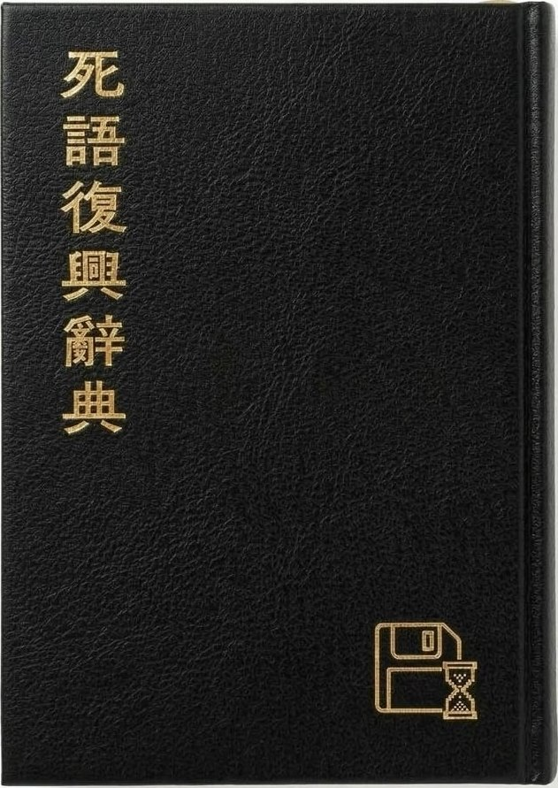
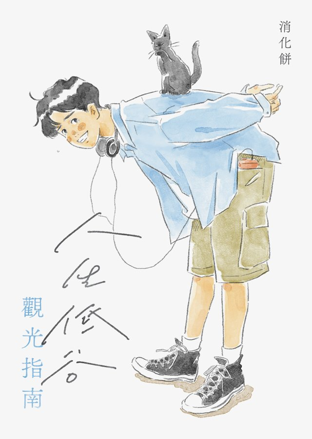

No.002．辭典．2026 年 10 月
消化餅 編
史上第一本最ㄅㄧㄤˋ又最 LKK 的死語寶典。
「拉風」「3Q 得 Orz」「ㄅㄧㄤˋ」「洗眼睛」「哇哩咧」「5201314」，這些曾經在 BBS、即時通、Call 機螢幕上活蹦亂跳的字眼，沒有誰宣布淘汰它們，只是被生活默默換掉，連告別都來不及。
本書收錄兩百五十多條過氣流行語，依部首筆畫排序，每一條都有正式釋義、例句、語源考據、時代插圖，以及詼諧的「死語復興指數」評等。內容是荒謬的，形式是嚴肅的。
書末另附十一篇附錄與兩組圖版，從 Call 機數字傳情表、批踢踢歷屆流行語大賞、火星文一覽表，到台灣流行文化大事年表，把一整個世代的成長環境當作延伸閱讀。
本書透過與友善書業供給合作社合作的獨立書店販售，挑一間離你最近的書店訂購，順便認識一間你可能還沒走進去過的店。
查詢合作獨立書店⇀本書曾於嘖嘖集資，241 位支持者，達成 288%。看集資專案頁

No.001．雜文集 人生低谷觀光指南 教甄第七年落榜、集滿七個備取之後，寫給你的低谷導覽。